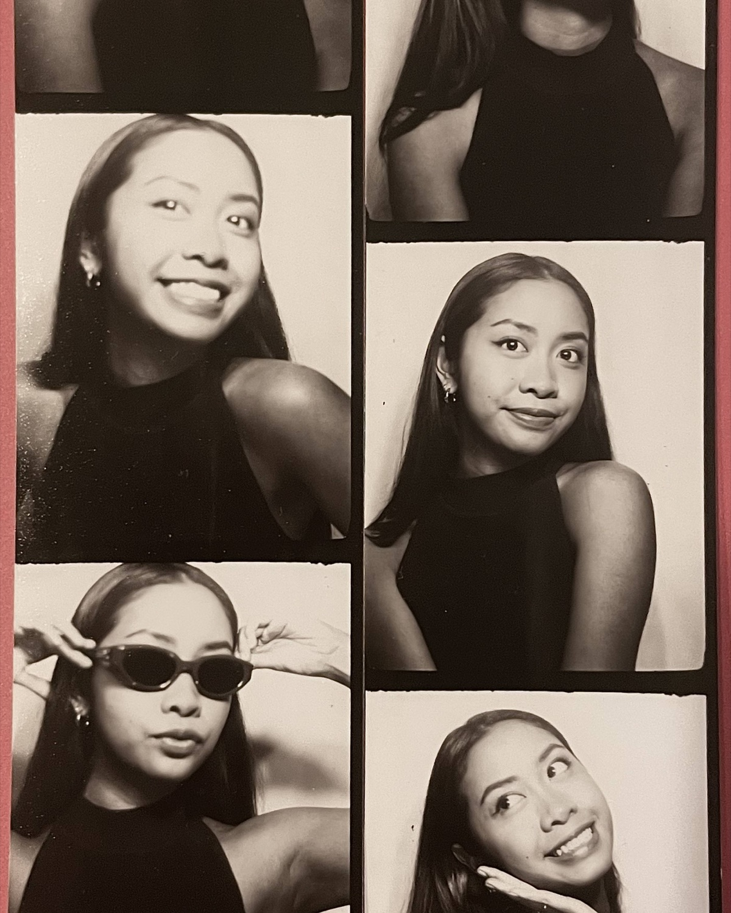
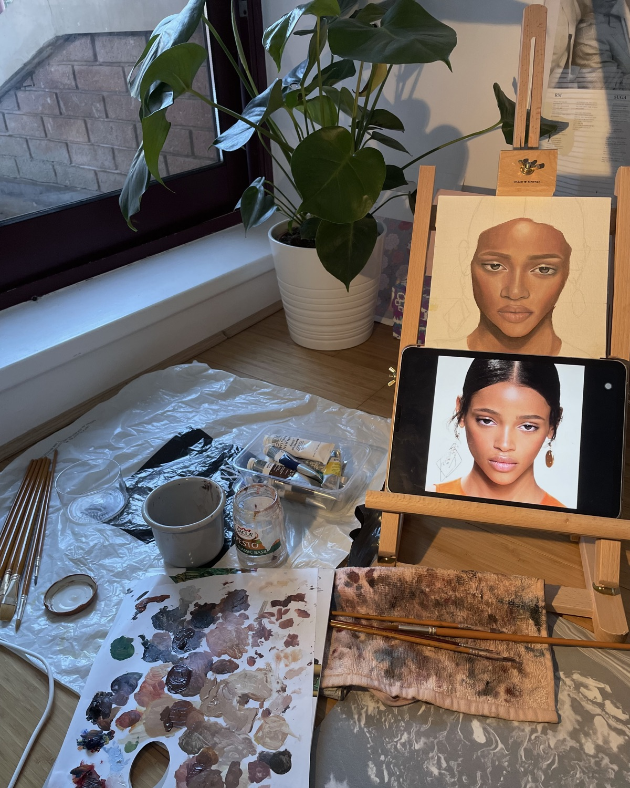
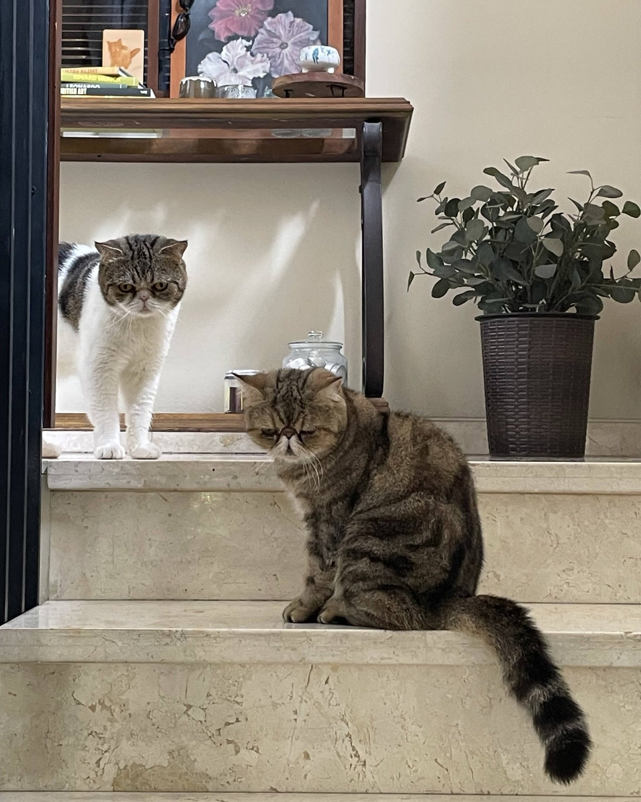
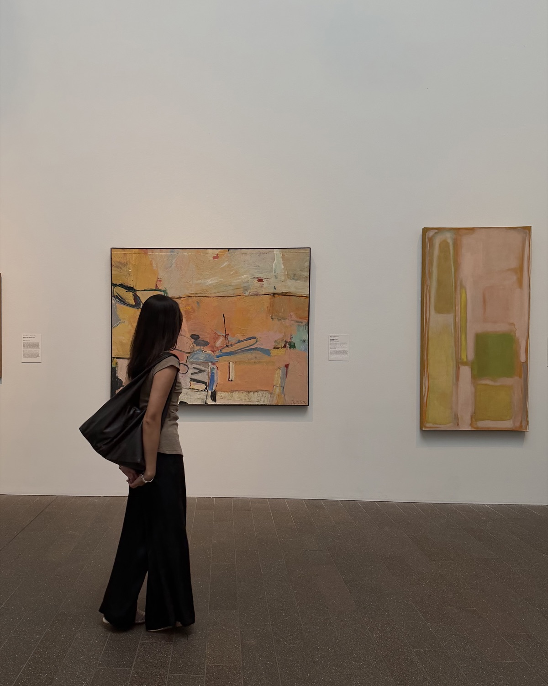

As a designer with a psychology background, I'm interested in how people think and how that shapes the products we build – especially as AI becomes part of everyday tools.
Most of my work sits between research and product – understanding problems properly, then helping shape them into something real. I'm still learning to code, and I like being involved end to end where I can.
I also draw and paint portraits, and I tend to approach design in the same way: starting with structure before detail, trying to understand what holds the composition together before refining how it looks or feels.
Currently exploring opportunities where I can stay close to both research and building, especially in AI-driven products.
Feel free to reach out to chat and collaborate (or grab a coffee!) ☺︎



